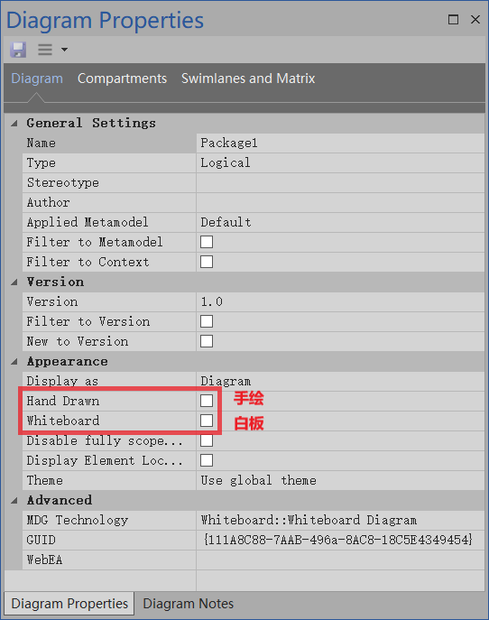
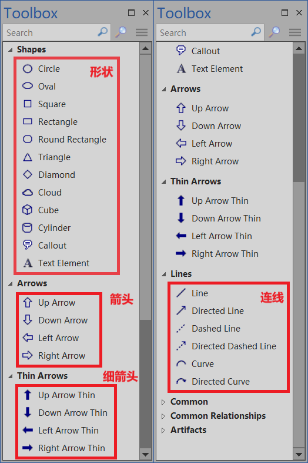
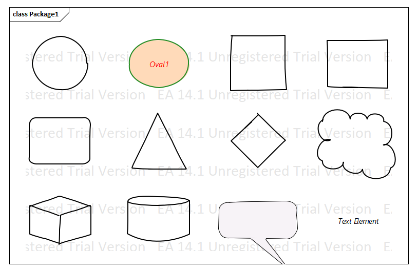

<!DOCTYPE html>
<html>
<head><meta name="generator" content="Hexo 3.8.0">
  <meta charset="utf-8">
  

  
  <title>在 Enterprise Architect 中画 Visio 的基本框图 | Enterprise Architect 用户指南（官方文档的粗译）</title>
  <meta name="viewport" content="width=device-width, initial-scale=1, maximum-scale=1">
  <meta name="description" content="有的时候我们想画画框图用 Visio 是很方便的。可在 Enterprise Architect（后面简称为 EA ）中用什么图画框图比较好呢。有的说用对象图、流程图都可以。我看了下后感觉里面的图形元素和 Visio 框图中的形状还是差了不少。 我就不信 EA 里面连方块、三角、圆都没有！有严重强迫症的我几乎把 EA 中所有的图都看了一遍，终于找个比较接近 Visio 基本框中图形状的图。那就是白">
<meta name="keywords" content="Enterprise Architect, EA, UML, 中文文档, 中文用户手册">
<meta property="og:type" content="article">
<meta property="og:title" content="在 Enterprise Architect 中画 Visio 的基本框图">
<meta property="og:url" content="http://yoursite.com/by-lcl/visio-block-diagram-in-enterprise-architect.html">
<meta property="og:site_name" content="Enterprise Architect 用户指南（官方文档的粗译）">
<meta property="og:description" content="有的时候我们想画画框图用 Visio 是很方便的。可在 Enterprise Architect（后面简称为 EA ）中用什么图画框图比较好呢。有的说用对象图、流程图都可以。我看了下后感觉里面的图形元素和 Visio 框图中的形状还是差了不少。 我就不信 EA 里面连方块、三角、圆都没有！有严重强迫症的我几乎把 EA 中所有的图都看了一遍，终于找个比较接近 Visio 基本框中图形状的图。那就是白">
<meta property="og:locale" content="default">
<meta property="og:image" content="http://yoursite.com/by-lcl/visio-block-diagram-in-enterprise-architect/create-a-whiteboard-diagram-00.png">
<meta property="og:image" content="http://yoursite.com/by-lcl/visio-block-diagram-in-enterprise-architect/create-a-whiteboard-diagram-01.png">
<meta property="og:image" content="http://yoursite.com/by-lcl/visio-block-diagram-in-enterprise-architect/create-a-whiteboard-diagram-02.png">
<meta property="og:image" content="http://yoursite.com/by-lcl/visio-block-diagram-in-enterprise-architect/ea-whiteboard-diagram-properties.png">
<meta property="og:image" content="http://yoursite.com/by-lcl/visio-block-diagram-in-enterprise-architect/ea-whiteboard-diagram-toolbox.png">
<meta property="og:image" content="http://yoursite.com/by-lcl/visio-block-diagram-in-enterprise-architect/ea-whiteboard-diagram-shapes-sample.png">
<meta property="og:image" content="http://yoursite.com/by-lcl/visio-block-diagram-in-enterprise-architect/ea-whiteboard-diagram-element-properties.png">
<meta property="og:updated_time" content="2019-02-12T05:34:58.655Z">
<meta name="twitter:card" content="summary">
<meta name="twitter:title" content="在 Enterprise Architect 中画 Visio 的基本框图">
<meta name="twitter:description" content="有的时候我们想画画框图用 Visio 是很方便的。可在 Enterprise Architect（后面简称为 EA ）中用什么图画框图比较好呢。有的说用对象图、流程图都可以。我看了下后感觉里面的图形元素和 Visio 框图中的形状还是差了不少。 我就不信 EA 里面连方块、三角、圆都没有！有严重强迫症的我几乎把 EA 中所有的图都看了一遍，终于找个比较接近 Visio 基本框中图形状的图。那就是白">
<meta name="twitter:image" content="http://yoursite.com/by-lcl/visio-block-diagram-in-enterprise-architect/create-a-whiteboard-diagram-00.png">
  
    <link rel="alternate" href="/atom.xml" title="Enterprise Architect 用户指南（官方文档的粗译）" type="application/atom+xml">
  
  
    <link rel="icon" href="/favicon.png">
  
  
    <link href="//fonts.googleapis.com/css?family=Source+Code+Pro" rel="stylesheet" type="text/css">
  
  <link rel="stylesheet" href="/css/style.css">
</head>
</html>
<body>
  <div id="container">
    <div id="wrap">
      <header id="header">
  <div id="banner"></div>
  <div id="header-outer" class="outer">
    <div id="header-title" class="inner">
      <h1 id="logo-wrap">
        <a href="/" id="logo">Enterprise Architect 用户指南（官方文档的粗译）</a>
      </h1>
      
        <h2 id="subtitle-wrap">
          <a href="/" id="subtitle">Enterprise Architect（EA）官方用户手册的个人理解翻译版。</a>
        </h2>
      
    </div>
    <div id="header-inner" class="inner">
      <nav id="main-nav">
        <a id="main-nav-toggle" class="nav-icon"></a>
        
          <a class="main-nav-link" href="/">Home</a>
        
          <a class="main-nav-link" href="/archives">Archives</a>
        
      </nav>
      <nav id="sub-nav">
        
          <a id="nav-rss-link" class="nav-icon" href="/atom.xml" title="RSS Feed"></a>
        
        <a id="nav-search-btn" class="nav-icon" title="Search"></a>
      </nav>
      <div id="search-form-wrap">
        <form action="//google.com/search" method="get" accept-charset="UTF-8" class="search-form"><input type="search" name="q" class="search-form-input" placeholder="Search"><button type="submit" class="search-form-submit">&#xF002;</button><input type="hidden" name="sitesearch" value="http://yoursite.com"></form>
      </div>
    </div>
  </div>
</header>
      <div class="outer">
        <section id="main"><article id="post-by-lcl/visio-block-diagram-in-enterprise-architect" class="article article-type-post" itemscope="" itemprop="blogPost">
  <div class="article-meta">
    <a href="/by-lcl/visio-block-diagram-in-enterprise-architect.html" class="article-date">
  <time datetime="2019-02-07T16:00:00.000Z" itemprop="datePublished">2019-02-08</time>
</a>
    
  </div>
  <div class="article-inner">
    
    
      <header class="article-header">
        
  
    <h1 class="article-title" itemprop="name">
      在 Enterprise Architect 中画 Visio 的基本框图
    </h1>
  

      </header>
    
    <div class="article-entry" itemprop="articleBody">
      
        <p>有的时候我们想画画框图用 Visio 是很方便的。可在 Enterprise Architect（后面简称为 EA ）中用什么图画框图比较好呢。有的说用对象图、流程图都可以。我看了下后感觉里面的图形元素和 Visio 框图中的形状还是差了不少。</p>
<p>我就不信 EA 里面连方块、三角、圆都没有！有严重强迫症的我几乎把 EA 中所有的图都看了一遍，终于找个比较接近 Visio 基本框中图形状的图。那就是白板图！！！</p>
<h1 id="创建白板图"><a href="#创建白板图" class="headerlink" title="创建白板图"></a>创建白板图</h1><ol>
<li>打开 New Diagram 窗口（注意：不能在 Root Note 下创建图，需要选择个包后才能创建图）</li>
</ol>
<p></p>
<ol start="2">
<li>在 New Diagram 窗口中找到白板图</li>
</ol>
<p></p>
<ol start="3">
<li>选择白板图或手绘图（随便选什么都行，在图属性中可以随意切换）</li>
</ol>
<p></p>
<h1 id="白板图属性"><a href="#白板图属性" class="headerlink" title="白板图属性"></a>白板图属性</h1><p>白板图除了基本的图属性为，还有两个特殊的属性，分别是“手绘”和“白板”</p>
<ul>
<li>手绘：勾选后图中的元素线条会呈现出手绘的效果。</li>
<li>白板：勾选后图的背景变为白色，并且图中所有形状的填充色都将显示为白色。</li>
</ul>
<p></p>
<h1 id="图元素"><a href="#图元素" class="headerlink" title="图元素"></a>图元素</h1><h2 id="工具盒（Toolbox）"><a href="#工具盒（Toolbox）" class="headerlink" title="工具盒（Toolbox）"></a>工具盒（Toolbox）</h2><p></p>
<h2 id="形状（Shapes）"><a href="#形状（Shapes）" class="headerlink" title="形状（Shapes）"></a>形状（Shapes）</h2><p></p>
<p>注意到上图中有个与众不同的形状了吗？</p>
<p>那个就是图中的 Oval1 ，这个形状有两个不同之处：</p>
<ol>
<li>显示出了形状的名称；</li>
<li>不是透明的，有填充色。</li>
</ol>
<p>在白板图中的形状（Shapes）和箭头（Arrows）有两个通用的属性 fill 和 nameVisible ，分别用来控制是否填充和元素名称的显示，默认都为 false，如下图：</p>
<p></p>
<blockquote>
<p>注：上面的这两个属性不包括形状中的 Callout 和 Text Element</p>
</blockquote>
<h2 id="Thin-Arrows-amp-Lines"><a href="#Thin-Arrows-amp-Lines" class="headerlink" title="Thin Arrows &amp; Lines"></a>Thin Arrows &amp; Lines</h2><p>由于 Thin Arrows 和 Lines 元素都比较简单，这里就不在讲述了，自己去探索吧。</p>

      
    </div>
    <footer class="article-footer">
      <a data-url="http://yoursite.com/by-lcl/visio-block-diagram-in-enterprise-architect.html" data-id="cjs1ckcpu0000twlhkzh2wvon" class="article-share-link">Share</a>
      
      
    </footer>
  </div>
  
    
<nav id="article-nav">
  
  
    <a href="/guide-book/business-analysis-tools/boundary.html" id="article-nav-older" class="article-nav-link-wrap">
      <strong class="article-nav-caption">Older</strong>
      <div class="article-nav-title">了解边界（Boundary）</div>
    </a>
  
</nav>

  
</article>

</section>
        
          <aside id="sidebar">
  
    

  
    

  
    
  
    
  <div class="widget-wrap">
    <h3 class="widget-title">Archives</h3>
    <div class="widget">
      <ul class="archive-list"><li class="archive-list-item"><a class="archive-list-link" href="/archives/2019/02/">February 2019</a></li></ul>
    </div>
  </div>


  
    
  <div class="widget-wrap">
    <h3 class="widget-title">Recent Posts</h3>
    <div class="widget">
      <ul>
        
          <li>
            <a href="/by-lcl/visio-block-diagram-in-enterprise-architect.html">在 Enterprise Architect 中画 Visio 的基本框图</a>
          </li>
        
          <li>
            <a href="/guide-book/business-analysis-tools/boundary.html">了解边界（Boundary）</a>
          </li>
        
      </ul>
    </div>
  </div>

  
</aside>
        
      </div>
      <footer id="footer">
  
  <div class="outer">
    <div id="footer-info" class="inner">
      &copy; 2019 李晨亮<br>
      Powered by <a href="http://hexo.io/" target="_blank">Hexo</a>
    </div>
  </div>
</footer>
    </div>
    <nav id="mobile-nav">
  
    <a href="/" class="mobile-nav-link">Home</a>
  
    <a href="/archives" class="mobile-nav-link">Archives</a>
  
</nav>
    

<!-- <script src="//ajax.googleapis.com/ajax/libs/jquery/2.0.3/jquery.min.js"></script> -->
<script src="https://code.jquery.com/jquery-2.2.4.min.js" integrity="sha256-BbhdlvQf/xTY9gja0Dq3HiwQF8LaCRTXxZKRutelT44=" crossorigin="anonymous"></script>


  <link rel="stylesheet" href="/fancybox/jquery.fancybox.css">
  <script src="/fancybox/jquery.fancybox.pack.js"></script>


<script src="/js/script.js"></script>


  </div>
</body>
</html>